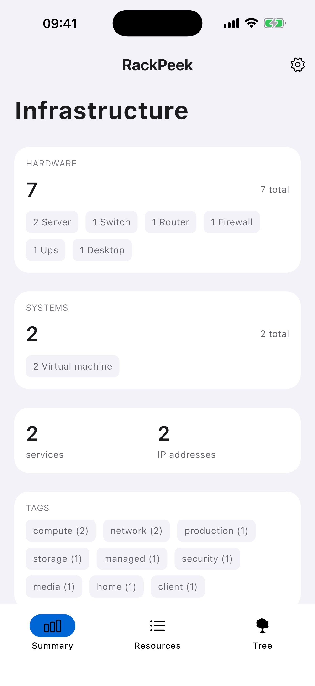

Inventory that makes sense
Keep servers, switches, routers, firewalls, access points, UPS units and other hardware alongside the systems and services they host.
Made for the home lab
Keep hardware, systems, services and networks documented in one clear, self-hosted inventory. Check in from the web, CLI or your phone.
Open source · Your data stays yours · No telemetry

A clearer picture
RackPeek brings your infrastructure notes and relationships together, without turning your home lab into an enterprise project.
Keep servers, switches, routers, firewalls, access points, UPS units and other hardware alongside the systems and services they host.
Follow the connections from physical hardware to virtual systems and services with useful trees, summaries and network views.
Store your configuration as readable YAML. Use the web UI, a scriptable CLI, or the mobile app to keep things up to date.
$ rpk summary
Infrastructure overview
● 7 hardware resources
● 2 systems
● 2 services
Config: ./config/config.yaml
Fits your workflow
Run RackPeek on your own server. Add and update resources in the web interface, automate with rpk, or use the iOS companion app when you’re away from your desk.
Your lab. Your notes. Your call.